Simscape Vehicle Library, KnC Tests, Half Car
This half car model is used to perform kinematics and compliance tests on a single axle of a vehicle. Loading different dataset selects different suspension models parameterizes the model. Vertical, steering, roll, aligning torque, lateral compliance, and longitudinal compliance tests are performed and suspension metrics are extracted from the results.
Contents
- Model
- Test Input Sequence
- Double Wishbone, Rigid Inboard Connections
- Double Wishbone, Bushing Inboard Connections
- Split Lower Arm, Shock to Lower Arm Rear, Bushings
- Split Lower Arm, Shock to Lower Arm Rear
- Five Link, Shock to Lower Arm Front
- Five Link, Shock to Lower Arm Front, Constraints
- Five Link, Shock to Lower Arm Rear
- MacPherson, Bushings
- Formula Student Vehicle, Pullrod
- Formula Student Vehicle, Pushrod
- Formula Student Vehicle, Decoupled Wishbone
- Formula Student Vehicle, Decoupled Five Link
- Twist Beam (Rear, No Steering)
- Live Axle (Rear, No Steering)
- Panhard Rod (Front)
- Trailing Arm (Rear)
- Watts (Rear)
Model
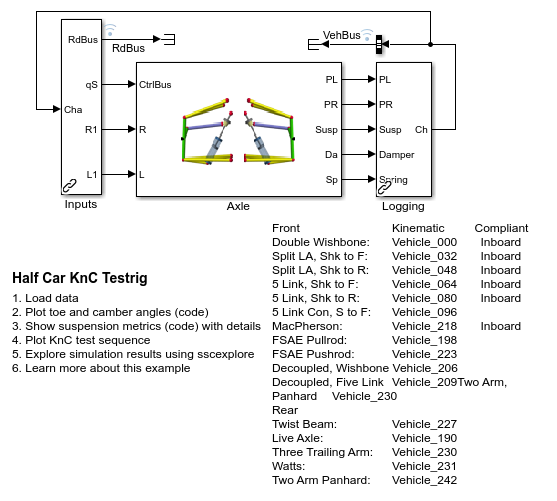
Test Input Sequence
The plot below shows the test inputs for the KnC test.
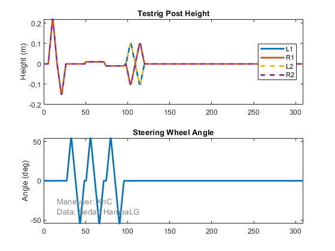
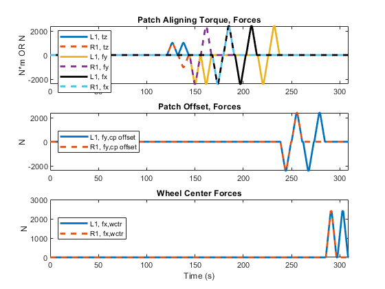
Double Wishbone, Rigid Inboard Connections
TSuspMetrics =
48×4 table
Names Values Units Description
_____________________________________ ___________ _________ _______________________________________
"Toe" -3.2437e-14 "deg" "+Toe In"
"Camber" 1.2722e-14 "deg" "+Top Out"
"Caster" 15.329 "deg" "+Top Rear of WC"
"KPI" 1.4742 "deg" "+Top Inside Bottom"
"Camber Change per Toe Change" -0.2741 "deg/deg" "+/-1 deg"
"Bump Steer" 4.2572 "deg/m" "+/- 10mm, +Toe In"
"Bump Camber" -24.161 "deg/m" "+/- 10mm, +Top Out"
"Bump Caster" 22.591 "deg/m" "+/- 10mm, +Caster Decrease"
"Caster Trail" 112.66 "mm" "+Forward of Contact Patch"
"Scrub Radius" 76.326 "mm" "+Inside Wheel Center"
"Hub Long Offset" -3.1535 "mm" "+Forward of WC"
"Hub Lat Offset" 87.199 "mm" "+Inside Wheel Center"
"Suspension Rate" 76.693 "N/mm" "+/-20mm, Wheel Center"
"Ride Rate" 61.349 "N/mm" "+/-20mm, Contact Patch"
"Ride Frequency" 0.31022 "Hz" "Uses Ride Rate"
"Wheel Travel Bump" 0.20329 "mm" "Up"
"Wheel Travel Rebound" -0.13116 "mm" "Down"
"Wheel Travel Total" 0.33445 "mm" "Up+Down"
"WC Recession Long" 0.033081 "mm/m" "+Backwards"
"WC Recession Lat" -0.0041182 "mm/m" "+In"
"Spring Ratio" 0.74745 "1" "Spring Disp/WC Disp"
"Damper Ratio" 0.74745 "1" "Damper Disp/WC Disp"
"Roll Steer" 0.25614 "deg" "+/-2deg Roll, +Toe In"
"Roll Camber" -1.6815 "deg" "+/-2deg Roll, +Top Out"
"Roll Stiffness" 1737.8 "N*m/deg" "+/-2deg Roll, Wheel Center"
"Roll Stiffness Total" 1699 "N*m/deg" "+/-2deg Roll, Contact Patch"
"Max Rack Travel" 55.103 "mm" "Rack Travel at Max Steer"
"Steering Ratio" 1.8501 "1" "Handwheel Angle/Toe Angle, 20 deg Toe"
"Max Toe Out" -29.949 "deg" "+Toe In"
"Max Toe In" 28.835 "deg" "+Toe In"
"Ackermann at 20 deg Inner" 13.309 "%" "0% if parallel, 100% if ideal"
"Ackermann at Max Inner" 11.621 "%" "0% if parallel, 100% if ideal"
"TCD Kerb to Kerb" 15.275 "m" "To Outer Front Wheel"
"TCD Wall to Wall" 15.758 "m" "To Outer Front Body Corner"
"Max Rack Force" 17.687 "kN" "From Applied Forces and Torques"
"Toe/Align Torque (In)" 4.6093e-14 "deg/kN" "In Phase"
"Toe/Align Torque (Out)" 5.1299e-14 "deg/kN" "Out Phase"
"Toe/Lat Force (In)" 2.3664e-14 "deg/kN" "In Phase"
"Toe/Lat Force (Out)" 1.226e-14 "deg/kN" "Out Phase"
"Camber/Lat Force (In)" -1.0602e-14 "deg/kN" "In Phase"
"Camber/Lat Force (Out)" -1.0602e-14 "deg/kN" "Out Phase"
"Lat Compliance WCtr/Lat Force (In)" 0 "mm/kN" "In Phase"
"Lat Compliance WCtr/Lat Force (Out)" 0 "mm/kN" "Out Phase"
"Lat Compliance CP/Lat Force (In)" -4.6259e-14 "mm/kN" "In Phase"
"Lat Compliance CP/Lat Force (Out)" -9.2519e-14 "mm/kN" "Out Phase"
"Long Compliance Steer Braking" 1.5281e-14 "deg/kN" "0:1kN, +Toe In"
"Long Compliance Steer Tracking" -3.8984e-15 "deg/kN" "-1:+1kN, +Toe In"
"WC Long Compliance" 4.1885e-17 "mm/kN" "0:-1kN"
Double Wishbone, Bushing Inboard Connections
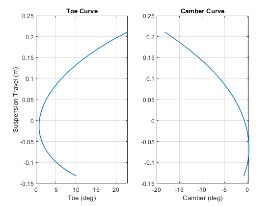
TSuspMetrics =
48×4 table
Names Values Units Description
_____________________________________ __________ _________ _______________________________________
"Toe" 0.88569 "deg" "+Toe In"
"Camber" -0.61312 "deg" "+Top Out"
"Caster" 15.052 "deg" "+Top Rear of WC"
"KPI" 1.0753 "deg" "+Top Inside Bottom"
"Camber Change per Toe Change" -0.26891 "deg/deg" "+/-1 deg"
"Bump Steer" 11.586 "deg/m" "+/- 10mm, +Toe In"
"Bump Camber" -30.068 "deg/m" "+/- 10mm, +Top Out"
"Bump Caster" 19.825 "deg/m" "+/- 10mm, +Caster Decrease"
"Caster Trail" 110.65 "mm" "+Forward of Contact Patch"
"Scrub Radius" 79.427 "mm" "+Inside Wheel Center"
"Hub Long Offset" -2.9687 "mm" "+Forward of WC"
"Hub Lat Offset" 87.357 "mm" "+Inside Wheel Center"
"Suspension Rate" 74.355 "N/mm" "+/-20mm, Wheel Center"
"Ride Rate" 59.844 "N/mm" "+/-20mm, Contact Patch"
"Ride Frequency" 0.30639 "Hz" "Uses Ride Rate"
"Wheel Travel Bump" 0.21116 "mm" "Up"
"Wheel Travel Rebound" -0.13194 "mm" "Down"
"Wheel Travel Total" 0.3431 "mm" "Up+Down"
"WC Recession Long" 0.049682 "mm/m" "+Backwards"
"WC Recession Lat" 0.0073783 "mm/m" "+In"
"Spring Ratio" 0.728 "1" "Spring Disp/WC Disp"
"Damper Ratio" 0.728 "1" "Damper Disp/WC Disp"
"Roll Steer" 0.8524 "deg" "+/-2deg Roll, +Toe In"
"Roll Camber" -2.1532 "deg" "+/-2deg Roll, +Top Out"
"Roll Stiffness" 1681.8 "N*m/deg" "+/-2deg Roll, Wheel Center"
"Roll Stiffness Total" 1645.5 "N*m/deg" "+/-2deg Roll, Contact Patch"
"Max Rack Travel" 55.103 "mm" "Rack Travel at Max Steer"
"Steering Ratio" 1.7692 "1" "Handwheel Angle/Toe Angle, 20 deg Toe"
"Max Toe Out" -28.706 "deg" "+Toe In"
"Max Toe In" 29.67 "deg" "+Toe In"
"Ackermann at 20 deg Inner" -24.962 "%" "0% if parallel, 100% if ideal"
"Ackermann at Max Inner" -9.5008 "%" "0% if parallel, 100% if ideal"
"TCD Kerb to Kerb" 14.894 "m" "To Outer Front Wheel"
"TCD Wall to Wall" 15.395 "m" "To Outer Front Body Corner"
"Max Rack Force" 17.591 "kN" "From Applied Forces and Torques"
"Toe/Align Torque (In)" -0.87186 "deg/kN" "In Phase"
"Toe/Align Torque (Out)" -0.87308 "deg/kN" "Out Phase"
"Toe/Lat Force (In)" -0.27373 "deg/kN" "In Phase"
"Toe/Lat Force (Out)" -0.2742 "deg/kN" "Out Phase"
"Camber/Lat Force (In)" 0.19333 "deg/kN" "In Phase"
"Camber/Lat Force (Out)" 0.19369 "deg/kN" "Out Phase"
"Lat Compliance WCtr/Lat Force (In)" 0.099413 "mm/kN" "In Phase"
"Lat Compliance WCtr/Lat Force (Out)" 0.099069 "mm/kN" "Out Phase"
"Lat Compliance CP/Lat Force (In)" 0.55982 "mm/kN" "In Phase"
"Lat Compliance CP/Lat Force (Out)" 0.5568 "mm/kN" "Out Phase"
"Long Compliance Steer Braking" -0.06183 "deg/kN" "0:1kN, +Toe In"
"Long Compliance Steer Tracking" -0.066085 "deg/kN" "-1:+1kN, +Toe In"
"WC Long Compliance" -0.0006493 "mm/kN" "0:-1kN"
Split Lower Arm, Shock to Lower Arm Rear, Bushings
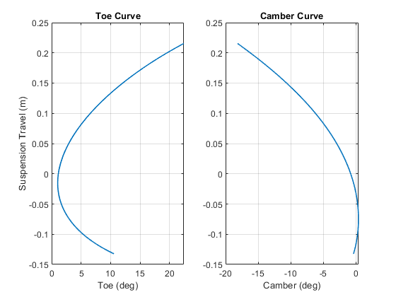
TSuspMetrics =
48×4 table
Names Values Units Description
_____________________________________ ___________ _________ _______________________________________
"Toe" 1.1423 "deg" "+Toe In"
"Camber" -0.77398 "deg" "+Top Out"
"Caster" 14.487 "deg" "+Top Rear of WC"
"KPI" 7.766 "deg" "+Top Inside Bottom"
"Camber Change per Toe Change" -0.25838 "deg/deg" "+/-1 deg"
"Bump Steer" 14.023 "deg/m" "+/- 10mm, +Toe In"
"Bump Camber" -31.872 "deg/m" "+/- 10mm, +Top Out"
"Bump Caster" 27.629 "deg/m" "+/- 10mm, +Caster Decrease"
"Caster Trail" 108.68 "mm" "+Forward of Contact Patch"
"Scrub Radius" -7.8991 "mm" "+Inside Wheel Center"
"Hub Long Offset" -0.48454 "mm" "+Forward of WC"
"Hub Lat Offset" 49.721 "mm" "+Inside Wheel Center"
"Suspension Rate" 71.063 "N/mm" "+/-20mm, Wheel Center"
"Ride Rate" 57.693 "N/mm" "+/-20mm, Contact Patch"
"Ride Frequency" 0.30083 "Hz" "Uses Ride Rate"
"Wheel Travel Bump" 0.21554 "mm" "Up"
"Wheel Travel Rebound" -0.13235 "mm" "Down"
"Wheel Travel Total" 0.34788 "mm" "Up+Down"
"WC Recession Long" 0.053931 "mm/m" "+Backwards"
"WC Recession Lat" 0.011099 "mm/m" "+In"
"Spring Ratio" 0.7134 "1" "Spring Disp/WC Disp"
"Damper Ratio" 0.7134 "1" "Damper Disp/WC Disp"
"Roll Steer" 0.9734 "deg" "+/-2deg Roll, +Toe In"
"Roll Camber" -2.2537 "deg" "+/-2deg Roll, +Top Out"
"Roll Stiffness" 1571.9 "N*m/deg" "+/-2deg Roll, Wheel Center"
"Roll Stiffness Total" 1540.1 "N*m/deg" "+/-2deg Roll, Contact Patch"
"Max Rack Travel" 55.103 "mm" "Rack Travel at Max Steer"
"Steering Ratio" 1.7912 "1" "Handwheel Angle/Toe Angle, 20 deg Toe"
"Max Toe Out" -27.777 "deg" "+Toe In"
"Max Toe In" 29.257 "deg" "+Toe In"
"Ackermann at 20 deg Inner" -34.674 "%" "0% if parallel, 100% if ideal"
"Ackermann at Max Inner" -14.994 "%" "0% if parallel, 100% if ideal"
"TCD Kerb to Kerb" 15.079 "m" "To Outer Front Wheel"
"TCD Wall to Wall" 15.572 "m" "To Outer Front Body Corner"
"Max Rack Force" 17.011 "kN" "From Applied Forces and Torques"
"Toe/Align Torque (In)" -1.0061 "deg/kN" "In Phase"
"Toe/Align Torque (Out)" -1.0076 "deg/kN" "Out Phase"
"Toe/Lat Force (In)" -0.31722 "deg/kN" "In Phase"
"Toe/Lat Force (Out)" -0.31785 "deg/kN" "Out Phase"
"Camber/Lat Force (In)" 0.21969 "deg/kN" "In Phase"
"Camber/Lat Force (Out)" 0.22016 "deg/kN" "Out Phase"
"Lat Compliance WCtr/Lat Force (In)" 0.17706 "mm/kN" "In Phase"
"Lat Compliance WCtr/Lat Force (Out)" 0.17654 "mm/kN" "Out Phase"
"Lat Compliance CP/Lat Force (In)" 0.93698 "mm/kN" "In Phase"
"Lat Compliance CP/Lat Force (Out)" 0.93296 "mm/kN" "Out Phase"
"Long Compliance Steer Braking" 0.0035492 "deg/kN" "0:1kN, +Toe In"
"Long Compliance Steer Tracking" -0.0024438 "deg/kN" "-1:+1kN, +Toe In"
"WC Long Compliance" -0.00065996 "mm/kN" "0:-1kN"
Split Lower Arm, Shock to Lower Arm Rear
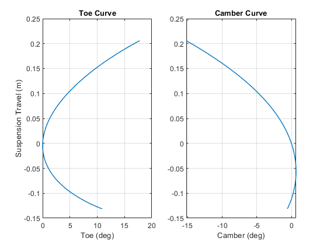
TSuspMetrics =
48×4 table
Names Values Units Description
_____________________________________ ___________ _________ _______________________________________
"Toe" 2.2621e-14 "deg" "+Toe In"
"Camber" -3.8167e-14 "deg" "+Top Out"
"Caster" 14.846 "deg" "+Top Rear of WC"
"KPI" 8.0894 "deg" "+Top Inside Bottom"
"Camber Change per Toe Change" -0.26506 "deg/deg" "+/-1 deg"
"Bump Steer" 4.1469 "deg/m" "+/- 10mm, +Toe In"
"Bump Camber" -24.113 "deg/m" "+/- 10mm, +Top Out"
"Bump Caster" 29.988 "deg/m" "+/- 10mm, +Caster Decrease"
"Caster Trail" 111.07 "mm" "+Forward of Contact Patch"
"Scrub Radius" -10.476 "mm" "+Inside Wheel Center"
"Hub Long Offset" -0.92707 "mm" "+Forward of WC"
"Hub Lat Offset" 49.575 "mm" "+Inside Wheel Center"
"Suspension Rate" 73.934 "N/mm" "+/-20mm, Wheel Center"
"Ride Rate" 59.572 "N/mm" "+/-20mm, Contact Patch"
"Ride Frequency" 0.30569 "Hz" "Uses Ride Rate"
"Wheel Travel Bump" 0.20586 "mm" "Up"
"Wheel Travel Rebound" -0.13133 "mm" "Down"
"Wheel Travel Total" 0.33719 "mm" "Up+Down"
"WC Recession Long" 0.035773 "mm/m" "+Backwards"
"WC Recession Lat" -0.0040667 "mm/m" "+In"
"Spring Ratio" 0.74027 "1" "Spring Disp/WC Disp"
"Damper Ratio" 0.74027 "1" "Damper Disp/WC Disp"
"Roll Steer" 0.23399 "deg" "+/-2deg Roll, +Toe In"
"Roll Camber" -1.6785 "deg" "+/-2deg Roll, +Top Out"
"Roll Stiffness" 1684.1 "N*m/deg" "+/-2deg Roll, Wheel Center"
"Roll Stiffness Total" 1647.6 "N*m/deg" "+/-2deg Roll, Contact Patch"
"Max Rack Travel" 55.103 "mm" "Rack Travel at Max Steer"
"Steering Ratio" 1.8909 "1" "Handwheel Angle/Toe Angle, 20 deg Toe"
"Max Toe Out" -29.873 "deg" "+Toe In"
"Max Toe In" 28.304 "deg" "+Toe In"
"Ackermann at 20 deg Inner" 14.814 "%" "0% if parallel, 100% if ideal"
"Ackermann at Max Inner" 16.988 "%" "0% if parallel, 100% if ideal"
"TCD Kerb to Kerb" 15.529 "m" "To Outer Front Wheel"
"TCD Wall to Wall" 16 "m" "To Outer Front Body Corner"
"Max Rack Force" 17.273 "kN" "From Applied Forces and Torques"
"Toe/Align Torque (In)" -2.134e-14 "deg/kN" "In Phase"
"Toe/Align Torque (Out)" -2.3049e-14 "deg/kN" "Out Phase"
"Toe/Lat Force (In)" -3.768e-15 "deg/kN" "In Phase"
"Toe/Lat Force (Out)" -1.0516e-14 "deg/kN" "Out Phase"
"Camber/Lat Force (In)" 2.6505e-15 "deg/kN" "In Phase"
"Camber/Lat Force (Out)" 2.6505e-15 "deg/kN" "Out Phase"
"Lat Compliance WCtr/Lat Force (In)" 0 "mm/kN" "In Phase"
"Lat Compliance WCtr/Lat Force (Out)" 0 "mm/kN" "Out Phase"
"Lat Compliance CP/Lat Force (In)" 3.7007e-13 "mm/kN" "In Phase"
"Lat Compliance CP/Lat Force (Out)" 3.2382e-13 "mm/kN" "Out Phase"
"Long Compliance Steer Braking" -7.2251e-15 "deg/kN" "0:1kN, +Toe In"
"Long Compliance Steer Tracking" 3.0847e-15 "deg/kN" "-1:+1kN, +Toe In"
"WC Long Compliance" 4.2524e-17 "mm/kN" "0:-1kN"
Five Link, Shock to Lower Arm Front
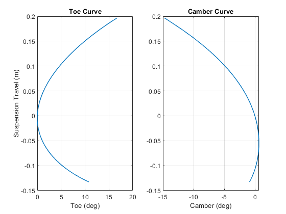
TSuspMetrics =
48×4 table
Names Values Units Description
_____________________________________ ___________ _________ _______________________________________
"Toe" -7.4727e-15 "deg" "+Toe In"
"Camber" -3.8167e-14 "deg" "+Top Out"
"Caster" 15.84 "deg" "+Top Rear of WC"
"KPI" 2.747 "deg" "+Top Inside Bottom"
"Camber Change per Toe Change" -0.28371 "deg/deg" "+/-1 deg"
"Bump Steer" 4.038 "deg/m" "+/- 10mm, +Toe In"
"Bump Camber" -24.3 "deg/m" "+/- 10mm, +Top Out"
"Bump Caster" 28.782 "deg/m" "+/- 10mm, +Caster Decrease"
"Caster Trail" 120.67 "mm" "+Forward of Contact Patch"
"Scrub Radius" 8.4525 "mm" "+Inside Wheel Center"
"Hub Long Offset" 0.79211 "mm" "+Forward of WC"
"Hub Lat Offset" 28.724 "mm" "+Inside Wheel Center"
"Suspension Rate" 80.198 "N/mm" "+/-20mm, Wheel Center"
"Ride Rate" 63.572 "N/mm" "+/-20mm, Contact Patch"
"Ride Frequency" 0.31579 "Hz" "Uses Ride Rate"
"Wheel Travel Bump" 0.1964 "mm" "Up"
"Wheel Travel Rebound" -0.13268 "mm" "Down"
"Wheel Travel Total" 0.32908 "mm" "Up+Down"
"WC Recession Long" 0.031248 "mm/m" "+Backwards"
"WC Recession Lat" -0.0047145 "mm/m" "+In"
"Spring Ratio" 0.75431 "1" "Spring Disp/WC Disp"
"Damper Ratio" 0.75431 "1" "Damper Disp/WC Disp"
"Roll Steer" 0.23526 "deg" "+/-2deg Roll, +Toe In"
"Roll Camber" -1.6931 "deg" "+/-2deg Roll, +Top Out"
"Roll Stiffness" 1791 "N*m/deg" "+/-2deg Roll, Wheel Center"
"Roll Stiffness Total" 1749.8 "N*m/deg" "+/-2deg Roll, Contact Patch"
"Max Rack Travel" 55.103 "mm" "Rack Travel at Max Steer"
"Steering Ratio" 1.9318 "1" "Handwheel Angle/Toe Angle, 20 deg Toe"
"Max Toe Out" -30.386 "deg" "+Toe In"
"Max Toe In" 27.747 "deg" "+Toe In"
"Ackermann at 20 deg Inner" 28.521 "%" "0% if parallel, 100% if ideal"
"Ackermann at Max Inner" 29.712 "%" "0% if parallel, 100% if ideal"
"TCD Kerb to Kerb" 15.806 "m" "To Outer Front Wheel"
"TCD Wall to Wall" 16.265 "m" "To Outer Front Body Corner"
"Max Rack Force" 17.097 "kN" "From Applied Forces and Torques"
"Toe/Align Torque (In)" 2.3233e-14 "deg/kN" "In Phase"
"Toe/Align Torque (Out)" 7.9159e-15 "deg/kN" "Out Phase"
"Toe/Lat Force (In)" 1.5066e-14 "deg/kN" "In Phase"
"Toe/Lat Force (Out)" 1.5509e-14 "deg/kN" "Out Phase"
"Camber/Lat Force (In)" -5.3009e-15 "deg/kN" "In Phase"
"Camber/Lat Force (Out)" -5.3009e-15 "deg/kN" "Out Phase"
"Lat Compliance WCtr/Lat Force (In)" -2.313e-13 "mm/kN" "In Phase"
"Lat Compliance WCtr/Lat Force (Out)" -2.313e-13 "mm/kN" "Out Phase"
"Lat Compliance CP/Lat Force (In)" 1.3878e-13 "mm/kN" "In Phase"
"Lat Compliance CP/Lat Force (Out)" 1.3878e-13 "mm/kN" "Out Phase"
"Long Compliance Steer Braking" 1.124e-14 "deg/kN" "0:1kN, +Toe In"
"Long Compliance Steer Tracking" -2.9652e-15 "deg/kN" "-1:+1kN, +Toe In"
"WC Long Compliance" 2.49e-17 "mm/kN" "0:-1kN"
Five Link, Shock to Lower Arm Front, Constraints
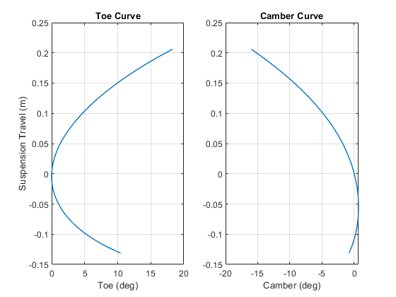
TSuspMetrics =
48×4 table
Names Values Units Description
_____________________________________ ___________ _________ _______________________________________
"Toe" 4.03e-14 "deg" "+Toe In"
"Camber" -3.8167e-14 "deg" "+Top Out"
"Caster" 15.84 "deg" "+Top Rear of WC"
"KPI" 2.747 "deg" "+Top Inside Bottom"
"Camber Change per Toe Change" -0.28371 "deg/deg" "+/-1 deg"
"Bump Steer" 4.0301 "deg/m" "+/- 10mm, +Toe In"
"Bump Camber" -24.296 "deg/m" "+/- 10mm, +Top Out"
"Bump Caster" 28.784 "deg/m" "+/- 10mm, +Caster Decrease"
"Caster Trail" 120.67 "mm" "+Forward of Contact Patch"
"Scrub Radius" 8.4547 "mm" "+Inside Wheel Center"
"Hub Long Offset" 0.79177 "mm" "+Forward of WC"
"Hub Lat Offset" 28.726 "mm" "+Inside Wheel Center"
"Suspension Rate" 74.149 "N/mm" "+/-20mm, Wheel Center"
"Ride Rate" 59.711 "N/mm" "+/-20mm, Contact Patch"
"Ride Frequency" 0.30605 "Hz" "Uses Ride Rate"
"Wheel Travel Bump" 0.20601 "mm" "Up"
"Wheel Travel Rebound" -0.13113 "mm" "Down"
"Wheel Travel Total" 0.33714 "mm" "Up+Down"
"WC Recession Long" 0.031239 "mm/m" "+Backwards"
"WC Recession Lat" -0.0046911 "mm/m" "+In"
"Spring Ratio" 0.74065 "1" "Spring Disp/WC Disp"
"Damper Ratio" 0.74065 "1" "Damper Disp/WC Disp"
"Roll Steer" 0.23535 "deg" "+/-2deg Roll, +Toe In"
"Roll Camber" -1.6932 "deg" "+/-2deg Roll, +Top Out"
"Roll Stiffness" 1687.8 "N*m/deg" "+/-2deg Roll, Wheel Center"
"Roll Stiffness Total" 1651.1 "N*m/deg" "+/-2deg Roll, Contact Patch"
"Max Rack Travel" 55.103 "mm" "Rack Travel at Max Steer"
"Steering Ratio" 1.9318 "1" "Handwheel Angle/Toe Angle, 20 deg Toe"
"Max Toe Out" -30.386 "deg" "+Toe In"
"Max Toe In" 27.747 "deg" "+Toe In"
"Ackermann at 20 deg Inner" 28.52 "%" "0% if parallel, 100% if ideal"
"Ackermann at Max Inner" 29.712 "%" "0% if parallel, 100% if ideal"
"TCD Kerb to Kerb" 15.806 "m" "To Outer Front Wheel"
"TCD Wall to Wall" 16.265 "m" "To Outer Front Body Corner"
"Max Rack Force" 17.097 "kN" "From Applied Forces and Torques"
"Toe/Align Torque (In)" -1.0518e-14 "deg/kN" "In Phase"
"Toe/Align Torque (Out)" -2.7842e-14 "deg/kN" "Out Phase"
"Toe/Lat Force (In)" -2.3096e-14 "deg/kN" "In Phase"
"Toe/Lat Force (Out)" -9.346e-15 "deg/kN" "Out Phase"
"Camber/Lat Force (In)" 2.6505e-15 "deg/kN" "In Phase"
"Camber/Lat Force (Out)" 2.6505e-15 "deg/kN" "Out Phase"
"Lat Compliance WCtr/Lat Force (In)" -2.7756e-13 "mm/kN" "In Phase"
"Lat Compliance WCtr/Lat Force (Out)" -2.313e-13 "mm/kN" "Out Phase"
"Lat Compliance CP/Lat Force (In)" 2.7756e-13 "mm/kN" "In Phase"
"Lat Compliance CP/Lat Force (Out)" 2.7756e-13 "mm/kN" "Out Phase"
"Long Compliance Steer Braking" -1.4669e-14 "deg/kN" "0:1kN, +Toe In"
"Long Compliance Steer Tracking" -3.5774e-15 "deg/kN" "-1:+1kN, +Toe In"
"WC Long Compliance" -5.2282e-18 "mm/kN" "0:-1kN"
Five Link, Shock to Lower Arm Rear
TSuspMetrics =
48×4 table
Names Values Units Description
_____________________________________ ___________ _________ _______________________________________
"Toe" -3.9638e-14 "deg" "+Toe In"
"Camber" -1.3994e-13 "deg" "+Top Out"
"Caster" 15.84 "deg" "+Top Rear of WC"
"KPI" 2.747 "deg" "+Top Inside Bottom"
"Camber Change per Toe Change" -0.28371 "deg/deg" "+/-1 deg"
"Bump Steer" 4.0419 "deg/m" "+/- 10mm, +Toe In"
"Bump Camber" -24.302 "deg/m" "+/- 10mm, +Top Out"
"Bump Caster" 28.781 "deg/m" "+/- 10mm, +Caster Decrease"
"Caster Trail" 120.66 "mm" "+Forward of Contact Patch"
"Scrub Radius" 8.4677 "mm" "+Inside Wheel Center"
"Hub Long Offset" 0.79107 "mm" "+Forward of WC"
"Hub Lat Offset" 28.739 "mm" "+Inside Wheel Center"
"Suspension Rate" 80.252 "N/mm" "+/-20mm, Wheel Center"
"Ride Rate" 63.606 "N/mm" "+/-20mm, Contact Patch"
"Ride Frequency" 0.31587 "Hz" "Uses Ride Rate"
"Wheel Travel Bump" 0.1964 "mm" "Up"
"Wheel Travel Rebound" -0.13268 "mm" "Down"
"Wheel Travel Total" 0.32908 "mm" "Up+Down"
"WC Recession Long" 0.031252 "mm/m" "+Backwards"
"WC Recession Lat" -0.0047271 "mm/m" "+In"
"Spring Ratio" 0.75431 "1" "Spring Disp/WC Disp"
"Damper Ratio" 0.75431 "1" "Damper Disp/WC Disp"
"Roll Steer" 0.23536 "deg" "+/-2deg Roll, +Toe In"
"Roll Camber" -1.6932 "deg" "+/-2deg Roll, +Top Out"
"Roll Stiffness" 1810.5 "N*m/deg" "+/-2deg Roll, Wheel Center"
"Roll Stiffness Total" 1768.4 "N*m/deg" "+/-2deg Roll, Contact Patch"
"Max Rack Travel" 55.103 "mm" "Rack Travel at Max Steer"
"Steering Ratio" 1.9318 "1" "Handwheel Angle/Toe Angle, 20 deg Toe"
"Max Toe Out" -30.386 "deg" "+Toe In"
"Max Toe In" 27.747 "deg" "+Toe In"
"Ackermann at 20 deg Inner" 28.52 "%" "0% if parallel, 100% if ideal"
"Ackermann at Max Inner" 29.712 "%" "0% if parallel, 100% if ideal"
"TCD Kerb to Kerb" 15.806 "m" "To Outer Front Wheel"
"TCD Wall to Wall" 16.265 "m" "To Outer Front Body Corner"
"Max Rack Force" 17.097 "kN" "From Applied Forces and Torques"
"Toe/Align Torque (In)" 2.9096e-14 "deg/kN" "In Phase"
"Toe/Align Torque (Out)" 4.9759e-14 "deg/kN" "Out Phase"
"Toe/Lat Force (In)" -1.4056e-15 "deg/kN" "In Phase"
"Toe/Lat Force (Out)" -4.5683e-15 "deg/kN" "Out Phase"
"Camber/Lat Force (In)" 1.3252e-14 "deg/kN" "In Phase"
"Camber/Lat Force (Out)" 1.0602e-14 "deg/kN" "Out Phase"
"Lat Compliance WCtr/Lat Force (In)" -3.4833e-11 "mm/kN" "In Phase"
"Lat Compliance WCtr/Lat Force (Out)" -3.4833e-11 "mm/kN" "Out Phase"
"Lat Compliance CP/Lat Force (In)" -3.1688e-11 "mm/kN" "In Phase"
"Lat Compliance CP/Lat Force (Out)" -3.1688e-11 "mm/kN" "Out Phase"
"Long Compliance Steer Braking" 1.4056e-14 "deg/kN" "0:1kN, +Toe In"
"Long Compliance Steer Tracking" 5.9934e-27 "deg/kN" "-1:+1kN, +Toe In"
"WC Long Compliance" -6.8334e-17 "mm/kN" "0:-1kN"
MacPherson, Bushings
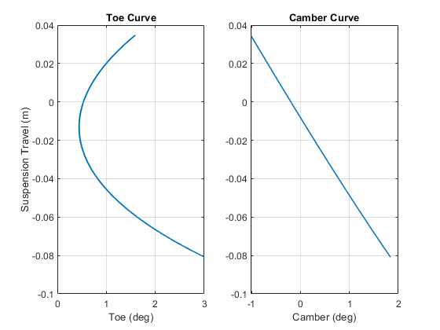
TSuspMetrics =
48×4 table
Names Values Units Description
_____________________________________ ___________ _________ _______________________________________
"Toe" 0.53412 "deg" "+Toe In"
"Camber" -0.19545 "deg" "+Top Out"
"Caster" 4.6044 "deg" "+Top Rear of WC"
"KPI" 9.8105 "deg" "+Top Inside Bottom"
"Camber Change per Toe Change" -0.080532 "deg/deg" "+/-1 deg"
"Bump Steer" 13.391 "deg/m" "+/- 10mm, +Toe In"
"Bump Camber" -23.914 "deg/m" "+/- 10mm, +Top Out"
"Bump Caster" 18.165 "deg/m" "+/- 10mm, +Caster Decrease"
"Caster Trail" -1.9842 "mm" "+Forward of Contact Patch"
"Scrub Radius" 49.381 "mm" "+Inside Wheel Center"
"Hub Long Offset" -36.011 "mm" "+Forward of WC"
"Hub Lat Offset" 122.44 "mm" "+Inside Wheel Center"
"Suspension Rate" 121.24 "N/mm" "+/-20mm, Wheel Center"
"Ride Rate" 86.889 "N/mm" "+/-20mm, Contact Patch"
"Ride Frequency" 0.36918 "Hz" "Uses Ride Rate"
"Wheel Travel Bump" 0.034795 "mm" "Up"
"Wheel Travel Rebound" -0.080826 "mm" "Down"
"Wheel Travel Total" 0.11562 "mm" "Up+Down"
"WC Recession Long" 0.10992 "mm/m" "+Backwards"
"WC Recession Lat" 0.020448 "mm/m" "+In"
"Spring Ratio" 0.86859 "1" "Spring Disp/WC Disp"
"Damper Ratio" 0.86859 "1" "Damper Disp/WC Disp"
"Roll Steer" 0.95427 "deg" "+/-2deg Roll, +Toe In"
"Roll Camber" -1.6887 "deg" "+/-2deg Roll, +Top Out"
"Roll Stiffness" 2757.4 "N*m/deg" "+/-2deg Roll, Wheel Center"
"Roll Stiffness Total" 2660.9 "N*m/deg" "+/-2deg Roll, Contact Patch"
"Max Rack Travel" 57.643 "mm" "Rack Travel at Max Steer"
"Steering Ratio" 1.6834 "1" "Handwheel Angle/Toe Angle, 20 deg Toe"
"Max Toe Out" -32.92 "deg" "+Toe In"
"Max Toe In" 32.527 "deg" "+Toe In"
"Ackermann at 20 deg Inner" -9.0479 "%" "0% if parallel, 100% if ideal"
"Ackermann at Max Inner" 3.2394 "%" "0% if parallel, 100% if ideal"
"TCD Kerb to Kerb" 13.749 "m" "To Outer Front Wheel"
"TCD Wall to Wall" 14.31 "m" "To Outer Front Body Corner"
"Max Rack Force" 9.4968 "kN" "From Applied Forces and Torques"
"Toe/Align Torque (In)" -1.1523 "deg/kN" "In Phase"
"Toe/Align Torque (Out)" -1.1538 "deg/kN" "Out Phase"
"Toe/Lat Force (In)" -0.2498 "deg/kN" "In Phase"
"Toe/Lat Force (Out)" -0.25025 "deg/kN" "Out Phase"
"Camber/Lat Force (In)" 0.077259 "deg/kN" "In Phase"
"Camber/Lat Force (Out)" 0.077455 "deg/kN" "Out Phase"
"Lat Compliance WCtr/Lat Force (In)" 0.31786 "mm/kN" "In Phase"
"Lat Compliance WCtr/Lat Force (Out)" 0.31714 "mm/kN" "Out Phase"
"Lat Compliance CP/Lat Force (In)" 0.95008 "mm/kN" "In Phase"
"Lat Compliance CP/Lat Force (Out)" 0.9479 "mm/kN" "Out Phase"
"Long Compliance Steer Braking" -0.061068 "deg/kN" "0:1kN, +Toe In"
"Long Compliance Steer Tracking" -0.063011 "deg/kN" "-1:+1kN, +Toe In"
"WC Long Compliance" -0.00074275 "mm/kN" "0:-1kN"
Formula Student Vehicle, Pullrod
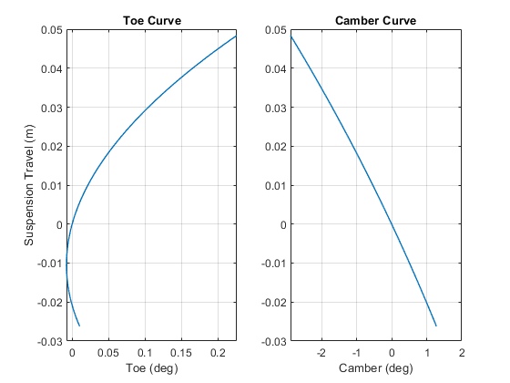
TSuspMetrics =
48×4 table
Names Values Units Description
_____________________________________ ___________ _________ _______________________________________
"Toe" -2.6607e-14 "deg" "+Toe In"
"Camber" 1.2722e-14 "deg" "+Top Out"
"Caster" 7.6444 "deg" "+Top Rear of WC"
"KPI" 5.1617 "deg" "+Top Inside Bottom"
"Camber Change per Toe Change" -0.13421 "deg/deg" "+/-1 deg"
"Bump Steer" 1.4705 "deg/m" "+/- 10mm, +Toe In"
"Bump Camber" -52.291 "deg/m" "+/- 10mm, +Top Out"
"Bump Caster" 34.79 "deg/m" "+/- 10mm, +Caster Decrease"
"Caster Trail" 48.433 "mm" "+Forward of Contact Patch"
"Scrub Radius" 23.197 "mm" "+Inside Wheel Center"
"Hub Long Offset" 17.129 "mm" "+Forward of WC"
"Hub Lat Offset" 44.265 "mm" "+Inside Wheel Center"
"Suspension Rate" 40.22 "N/mm" "+/-20mm, Wheel Center"
"Ride Rate" 35.557 "N/mm" "+/-20mm, Contact Patch"
"Ride Frequency" 0.92843 "Hz" "Uses Ride Rate"
"Wheel Travel Bump" 0.048384 "mm" "Up"
"Wheel Travel Rebound" -0.02622 "mm" "Down"
"Wheel Travel Total" 0.074604 "mm" "Up+Down"
"WC Recession Long" -0.056196 "mm/m" "+Backwards"
"WC Recession Lat" -0.16006 "mm/m" "+In"
"Spring Ratio" 0.94489 "1" "Spring Disp/WC Disp"
"Damper Ratio" 0.94489 "1" "Damper Disp/WC Disp"
"Roll Steer" 0.06239 "deg" "+/-2deg Roll, +Toe In"
"Roll Camber" -2.2642 "deg" "+/-2deg Roll, +Top Out"
"Roll Stiffness" 8426.4 "N*m/deg" "+/-2deg Roll, Wheel Center"
"Roll Stiffness Total" 7155.7 "N*m/deg" "+/-2deg Roll, Contact Patch"
"Max Rack Travel" 18.5 "mm" "Rack Travel at Max Steer"
"Steering Ratio" 3.2436 "1" "Handwheel Angle/Toe Angle, 20 deg Toe"
"Max Toe Out" -23.471 "deg" "+Toe In"
"Max Toe In" 22.339 "deg" "+Toe In"
"Ackermann at 20 deg Inner" 12.285 "%" "0% if parallel, 100% if ideal"
"Ackermann at Max Inner" 12.196 "%" "0% if parallel, 100% if ideal"
"TCD Kerb to Kerb" 8.4318 "m" "To Outer Front Wheel"
"TCD Wall to Wall" 9.03 "m" "To Outer Front Body Corner"
"Max Rack Force" 0 "kN" "From Applied Forces and Torques"
"Toe/Align Torque (In)" -2.8879e-15 "deg/kN" "In Phase"
"Toe/Align Torque (Out)" -1.9124e-15 "deg/kN" "Out Phase"
"Toe/Lat Force (In)" 4.1288e-15 "deg/kN" "In Phase"
"Toe/Lat Force (Out)" -5.7493e-14 "deg/kN" "Out Phase"
"Camber/Lat Force (In)" 5.3009e-15 "deg/kN" "In Phase"
"Camber/Lat Force (Out)" 3.4456e-14 "deg/kN" "Out Phase"
"Lat Compliance WCtr/Lat Force (In)" -9.2519e-14 "mm/kN" "In Phase"
"Lat Compliance WCtr/Lat Force (Out)" -9.2519e-14 "mm/kN" "Out Phase"
"Lat Compliance CP/Lat Force (In)" -2.7756e-13 "mm/kN" "In Phase"
"Lat Compliance CP/Lat Force (Out)" -3.7007e-13 "mm/kN" "Out Phase"
"Long Compliance Steer Braking" -4.0857e-14 "deg/kN" "0:1kN, +Toe In"
"Long Compliance Steer Tracking" -1.521e-14 "deg/kN" "-1:+1kN, +Toe In"
"WC Long Compliance" 1.4082e-17 "mm/kN" "0:-1kN"
Formula Student Vehicle, Pushrod
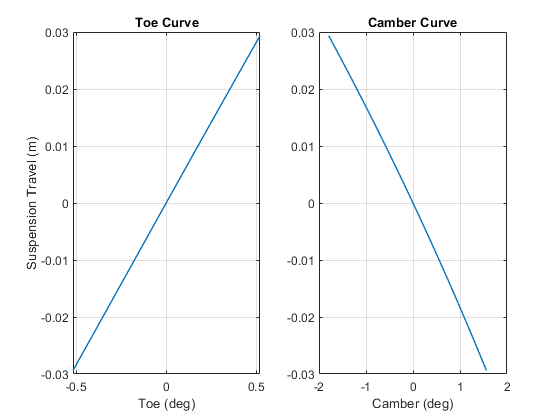
TSuspMetrics =
48×4 table
Names Values Units Description
_____________________________________ ___________ _________ _______________________________________
"Toe" 4.7662e-14 "deg" "+Toe In"
"Camber" 1.2722e-14 "deg" "+Top Out"
"Caster" 7.6328 "deg" "+Top Rear of WC"
"KPI" 5.0021 "deg" "+Top Inside Bottom"
"Camber Change per Toe Change" -0.134 "deg/deg" "+/-1 deg"
"Bump Steer" 17.64 "deg/m" "+/- 10mm, +Toe In"
"Bump Camber" -56.983 "deg/m" "+/- 10mm, +Top Out"
"Bump Caster" 1.9114 "deg/m" "+/- 10mm, +Caster Decrease"
"Caster Trail" 48.436 "mm" "+Forward of Contact Patch"
"Scrub Radius" 24.205 "mm" "+Inside Wheel Center"
"Hub Long Offset" 17.18 "mm" "+Forward of WC"
"Hub Lat Offset" 44.619 "mm" "+Inside Wheel Center"
"Suspension Rate" 78.15 "N/mm" "+/-20mm, Wheel Center"
"Ride Rate" 62.278 "N/mm" "+/-20mm, Contact Patch"
"Ride Frequency" 1.2287 "Hz" "Uses Ride Rate"
"Wheel Travel Bump" 0.02936 "mm" "Up"
"Wheel Travel Rebound" -0.02938 "mm" "Down"
"Wheel Travel Total" 0.05874 "mm" "Up+Down"
"WC Recession Long" -0.095187 "mm/m" "+Backwards"
"WC Recession Lat" -0.16532 "mm/m" "+In"
"Spring Ratio" 1.3634 "1" "Spring Disp/WC Disp"
"Damper Ratio" 1.3634 "1" "Damper Disp/WC Disp"
"Roll Steer" 0.76379 "deg" "+/-2deg Roll, +Toe In"
"Roll Camber" -2.4667 "deg" "+/-2deg Roll, +Top Out"
"Roll Stiffness" 11618 "N*m/deg" "+/-2deg Roll, Wheel Center"
"Roll Stiffness Total" 9332.9 "N*m/deg" "+/-2deg Roll, Contact Patch"
"Max Rack Travel" 18.5 "mm" "Rack Travel at Max Steer"
"Steering Ratio" 3.2479 "1" "Handwheel Angle/Toe Angle, 20 deg Toe"
"Max Toe Out" -23.423 "deg" "+Toe In"
"Max Toe In" 22.316 "deg" "+Toe In"
"Ackermann at 20 deg Inner" 12.062 "%" "0% if parallel, 100% if ideal"
"Ackermann at Max Inner" 11.963 "%" "0% if parallel, 100% if ideal"
"TCD Kerb to Kerb" 8.4398 "m" "To Outer Front Wheel"
"TCD Wall to Wall" 9.0373 "m" "To Outer Front Body Corner"
"Max Rack Force" 0 "kN" "From Applied Forces and Torques"
"Toe/Align Torque (In)" 1.1325e-13 "deg/kN" "In Phase"
"Toe/Align Torque (Out)" 7.4471e-14 "deg/kN" "Out Phase"
"Toe/Lat Force (In)" 3.4279e-14 "deg/kN" "In Phase"
"Toe/Lat Force (Out)" -3.6825e-14 "deg/kN" "Out Phase"
"Camber/Lat Force (In)" -3.1806e-14 "deg/kN" "In Phase"
"Camber/Lat Force (Out)" -1.0602e-14 "deg/kN" "Out Phase"
"Lat Compliance WCtr/Lat Force (In)" -9.2519e-14 "mm/kN" "In Phase"
"Lat Compliance WCtr/Lat Force (Out)" -9.2519e-14 "mm/kN" "Out Phase"
"Lat Compliance CP/Lat Force (In)" -9.2519e-14 "mm/kN" "In Phase"
"Lat Compliance CP/Lat Force (Out)" -1.8504e-13 "mm/kN" "Out Phase"
"Long Compliance Steer Braking" -1.5405e-14 "deg/kN" "0:1kN, +Toe In"
"Long Compliance Steer Tracking" -2.1859e-14 "deg/kN" "-1:+1kN, +Toe In"
"WC Long Compliance" 1.1498e-17 "mm/kN" "0:-1kN"
Formula Student Vehicle, Decoupled Wishbone
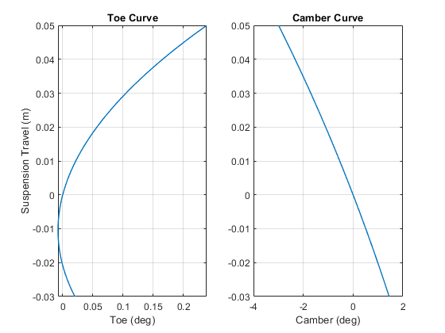
TSuspMetrics =
48×4 table
Names Values Units Description
_____________________________________ ___________ _________ _______________________________________
"Toe" -7.8049e-14 "deg" "+Toe In"
"Camber" -3.8167e-14 "deg" "+Top Out"
"Caster" 7.6444 "deg" "+Top Rear of WC"
"KPI" 5.1617 "deg" "+Top Inside Bottom"
"Camber Change per Toe Change" -0.13421 "deg/deg" "+/-1 deg"
"Bump Steer" 1.4705 "deg/m" "+/- 10mm, +Toe In"
"Bump Camber" -52.291 "deg/m" "+/- 10mm, +Top Out"
"Bump Caster" 34.786 "deg/m" "+/- 10mm, +Caster Decrease"
"Caster Trail" 48.433 "mm" "+Forward of Contact Patch"
"Scrub Radius" 23.197 "mm" "+Inside Wheel Center"
"Hub Long Offset" 17.129 "mm" "+Forward of WC"
"Hub Lat Offset" 44.265 "mm" "+Inside Wheel Center"
"Suspension Rate" 28.32 "N/mm" "+/-20mm, Wheel Center"
"Ride Rate" 25.926 "N/mm" "+/-20mm, Contact Patch"
"Ride Frequency" 0.79279 "Hz" "Uses Ride Rate"
"Wheel Travel Bump" NaN "mm" "Up"
"Wheel Travel Rebound" NaN "mm" "Down"
"Wheel Travel Total" NaN "mm" "Up+Down"
"WC Recession Long" -0.056196 "mm/m" "+Backwards"
"WC Recession Lat" -0.16006 "mm/m" "+In"
"Spring Ratio" 1.1306 "1" "Spring Disp/WC Disp"
"Damper Ratio" 1.1306 "1" "Damper Disp/WC Disp"
"Roll Steer" 0.062389 "deg" "+/-2deg Roll, +Toe In"
"Roll Camber" -2.2642 "deg" "+/-2deg Roll, +Top Out"
"Roll Stiffness" 463.95 "N*m/deg" "+/-2deg Roll, Wheel Center"
"Roll Stiffness Total" 459.46 "N*m/deg" "+/-2deg Roll, Contact Patch"
"Max Rack Travel" 18.5 "mm" "Rack Travel at Max Steer"
"Steering Ratio" 3.2436 "1" "Handwheel Angle/Toe Angle, 20 deg Toe"
"Max Toe Out" -23.471 "deg" "+Toe In"
"Max Toe In" 22.339 "deg" "+Toe In"
"Ackermann at 20 deg Inner" 12.285 "%" "0% if parallel, 100% if ideal"
"Ackermann at Max Inner" 12.196 "%" "0% if parallel, 100% if ideal"
"TCD Kerb to Kerb" 8.4318 "m" "To Outer Front Wheel"
"TCD Wall to Wall" 9.03 "m" "To Outer Front Body Corner"
"Max Rack Force" 0 "kN" "From Applied Forces and Torques"
"Toe/Align Torque (In)" -1.0768e-13 "deg/kN" "In Phase"
"Toe/Align Torque (Out)" -1.113e-13 "deg/kN" "Out Phase"
"Toe/Lat Force (In)" 4.4447e-14 "deg/kN" "In Phase"
"Toe/Lat Force (Out)" -1.0867e-14 "deg/kN" "Out Phase"
"Camber/Lat Force (In)" 3.1806e-14 "deg/kN" "In Phase"
"Camber/Lat Force (Out)" 3.1806e-14 "deg/kN" "Out Phase"
"Lat Compliance WCtr/Lat Force (In)" -9.2519e-14 "mm/kN" "In Phase"
"Lat Compliance WCtr/Lat Force (Out)" -9.2519e-14 "mm/kN" "Out Phase"
"Lat Compliance CP/Lat Force (In)" 9.2519e-14 "mm/kN" "In Phase"
"Lat Compliance CP/Lat Force (Out)" 9.2519e-14 "mm/kN" "Out Phase"
"Long Compliance Steer Braking" 5e-14 "deg/kN" "0:1kN, +Toe In"
"Long Compliance Steer Tracking" -2.0403e-14 "deg/kN" "-1:+1kN, +Toe In"
"WC Long Compliance" 8.4376e-17 "mm/kN" "0:-1kN"
Formula Student Vehicle, Decoupled Five Link
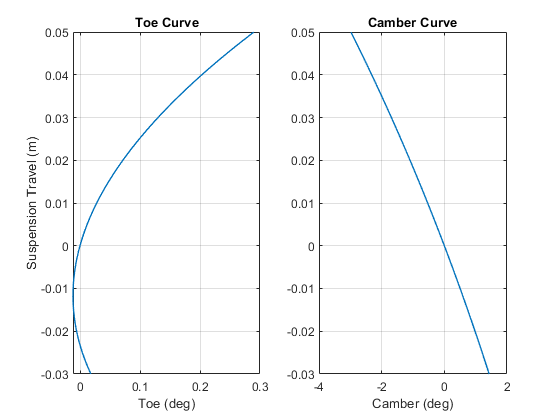
TSuspMetrics =
48×4 table
Names Values Units Description
_____________________________________ ___________ _________ _______________________________________
"Toe" 4.7062e-14 "deg" "+Toe In"
"Camber" -2.5444e-14 "deg" "+Top Out"
"Caster" 9.0193 "deg" "+Top Rear of WC"
"KPI" 15.12 "deg" "+Top Inside Bottom"
"Camber Change per Toe Change" -0.15872 "deg/deg" "+/-1 deg"
"Bump Steer" 1.964 "deg/m" "+/- 10mm, +Toe In"
"Bump Camber" -51.814 "deg/m" "+/- 10mm, +Top Out"
"Bump Caster" 57.817 "deg/m" "+/- 10mm, +Caster Decrease"
"Caster Trail" 25.481 "mm" "+Forward of Contact Patch"
"Scrub Radius" -14.418 "mm" "+Inside Wheel Center"
"Hub Long Offset" -11.54 "mm" "+Forward of WC"
"Hub Lat Offset" 48.601 "mm" "+Inside Wheel Center"
"Suspension Rate" 28.206 "N/mm" "+/-20mm, Wheel Center"
"Ride Rate" 25.83 "N/mm" "+/-20mm, Contact Patch"
"Ride Frequency" 0.79132 "Hz" "Uses Ride Rate"
"Wheel Travel Bump" NaN "mm" "Up"
"Wheel Travel Rebound" NaN "mm" "Down"
"Wheel Travel Total" NaN "mm" "Up+Down"
"WC Recession Long" -0.063291 "mm/m" "+Backwards"
"WC Recession Lat" -0.15946 "mm/m" "+In"
"Spring Ratio" 1.1284 "1" "Spring Disp/WC Disp"
"Damper Ratio" 1.1284 "1" "Damper Disp/WC Disp"
"Roll Steer" 0.082944 "deg" "+/-2deg Roll, +Toe In"
"Roll Camber" -2.2439 "deg" "+/-2deg Roll, +Top Out"
"Roll Stiffness" 462.12 "N*m/deg" "+/-2deg Roll, Wheel Center"
"Roll Stiffness Total" 457.66 "N*m/deg" "+/-2deg Roll, Contact Patch"
"Max Rack Travel" 18.5 "mm" "Rack Travel at Max Steer"
"Steering Ratio" 2.984 "1" "Handwheel Angle/Toe Angle, 20 deg Toe"
"Max Toe Out" -28.443 "deg" "+Toe In"
"Max Toe In" 23.912 "deg" "+Toe In"
"Ackermann at 20 deg Inner" 38.421 "%" "0% if parallel, 100% if ideal"
"Ackermann at Max Inner" 42.151 "%" "0% if parallel, 100% if ideal"
"TCD Kerb to Kerb" 7.9304 "m" "To Outer Front Wheel"
"TCD Wall to Wall" 8.5731 "m" "To Outer Front Body Corner"
"Max Rack Force" 0 "kN" "From Applied Forces and Torques"
"Toe/Align Torque (In)" 1.8568e-13 "deg/kN" "In Phase"
"Toe/Align Torque (Out)" 3.0033e-14 "deg/kN" "Out Phase"
"Toe/Lat Force (In)" -2.7574e-14 "deg/kN" "In Phase"
"Toe/Lat Force (Out)" -5.8199e-15 "deg/kN" "Out Phase"
"Camber/Lat Force (In)" 3.1806e-14 "deg/kN" "In Phase"
"Camber/Lat Force (Out)" 5.3009e-15 "deg/kN" "Out Phase"
"Lat Compliance WCtr/Lat Force (In)" 0 "mm/kN" "In Phase"
"Lat Compliance WCtr/Lat Force (Out)" -9.2519e-14 "mm/kN" "Out Phase"
"Lat Compliance CP/Lat Force (In)" 1.8504e-13 "mm/kN" "In Phase"
"Lat Compliance CP/Lat Force (Out)" 1.8504e-13 "mm/kN" "Out Phase"
"Long Compliance Steer Braking" -7.8054e-14 "deg/kN" "0:1kN, +Toe In"
"Long Compliance Steer Tracking" -7.0219e-14 "deg/kN" "-1:+1kN, +Toe In"
"WC Long Compliance" 2.5554e-16 "mm/kN" "0:-1kN"
Twist Beam (Rear, No Steering)
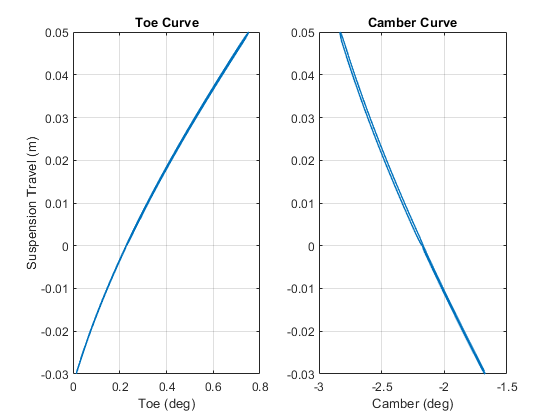
TSuspMetrics =
48×4 table
Names Values Units Description
_____________________________________ ___________ _________ _______________________________________
"Toe" 0.22845 "deg" "+Toe In"
"Camber" -2.175 "deg" "+Top Out"
"Caster" 6.2977e-05 "deg" "+Top Rear of WC"
"KPI" 88.357 "deg" "+Top Inside Bottom"
"Camber Change per Toe Change" -1.0998e-06 "deg/deg" "+/-1 deg"
"Bump Steer" 8.5801 "deg/m" "+/- 10mm, +Toe In"
"Bump Camber" -15.433 "deg/m" "+/- 10mm, +Top Out"
"Bump Caster" -0.016394 "deg/m" "+/- 10mm, +Caster Decrease"
"Caster Trail" 0.45686 "mm" "+Forward of Contact Patch"
"Scrub Radius" -12201 "mm" "+Inside Wheel Center"
"Hub Long Offset" 0.45647 "mm" "+Forward of WC"
"Hub Lat Offset" 2.1385 "mm" "+Inside Wheel Center"
"Suspension Rate" 25.572 "N/mm" "+/-20mm, Wheel Center"
"Ride Rate" 22.792 "N/mm" "+/-20mm, Contact Patch"
"Ride Frequency" 0.24654 "Hz" "Uses Ride Rate"
"Wheel Travel Bump" NaN "mm" "Up"
"Wheel Travel Rebound" NaN "mm" "Down"
"Wheel Travel Total" NaN "mm" "Up+Down"
"WC Recession Long" 0.24875 "mm/m" "+Backwards"
"WC Recession Lat" -0.0049631 "mm/m" "+In"
"Spring Ratio" 0.64259 "1" "Spring Disp/WC Disp"
"Damper Ratio" 0.64259 "1" "Damper Disp/WC Disp"
"Roll Steer" 0.25335 "deg" "+/-2deg Roll, +Toe In"
"Roll Camber" -1.1282 "deg" "+/-2deg Roll, +Top Out"
"Roll Stiffness" 481.54 "N*m/deg" "+/-2deg Roll, Wheel Center"
"Roll Stiffness Total" 475.98 "N*m/deg" "+/-2deg Roll, Contact Patch"
"Max Rack Travel" 0 "mm" "Rack Travel at Max Steer"
"Steering Ratio" 0 "1" "Handwheel Angle/Toe Angle, 20 deg Toe"
"Max Toe Out" 0.22849 "deg" "+Toe In"
"Max Toe In" 0.22849 "deg" "+Toe In"
"Ackermann at 20 deg Inner" NaN "%" "0% if parallel, 100% if ideal"
"Ackermann at Max Inner" NaN "%" "0% if parallel, 100% if ideal"
"TCD Kerb to Kerb" 0 "m" "To Outer Front Wheel"
"TCD Wall to Wall" 0 "m" "To Outer Front Body Corner"
"Max Rack Force" NaN "kN" "From Applied Forces and Torques"
"Toe/Align Torque (In)" -1.2809 "deg/kN" "In Phase"
"Toe/Align Torque (Out)" -0.19184 "deg/kN" "Out Phase"
"Toe/Lat Force (In)" -0.55216 "deg/kN" "In Phase"
"Toe/Lat Force (Out)" -0.14656 "deg/kN" "Out Phase"
"Camber/Lat Force (In)" 0.1684 "deg/kN" "In Phase"
"Camber/Lat Force (Out)" 0.73864 "deg/kN" "Out Phase"
"Lat Compliance WCtr/Lat Force (In)" -5.3602 "mm/kN" "In Phase"
"Lat Compliance WCtr/Lat Force (Out)" -1.5502 "mm/kN" "Out Phase"
"Lat Compliance CP/Lat Force (In)" 4.6968 "mm/kN" "In Phase"
"Lat Compliance CP/Lat Force (Out)" 5.008 "mm/kN" "Out Phase"
"Long Compliance Steer Braking" -0.043886 "deg/kN" "0:1kN, +Toe In"
"Long Compliance Steer Tracking" -0.049112 "deg/kN" "-1:+1kN, +Toe In"
"WC Long Compliance" 0.00076127 "mm/kN" "0:-1kN"
Live Axle (Rear, No Steering)
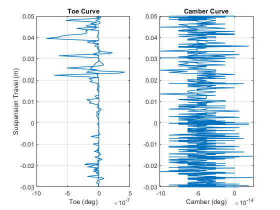
TSuspMetrics =
48×4 table
Names Values Units Description
_____________________________________ ___________ _________ _______________________________________
"Toe" -3.3972e-13 "deg" "+Toe In"
"Camber" -1.2722e-14 "deg" "+Top Out"
"Caster" -3.6454e-13 "deg" "+Top Rear of WC"
"KPI" NaN "deg" "+Top Inside Bottom"
"Camber Change per Toe Change" 6.3611e-15 "deg/deg" "+/-1 deg"
"Bump Steer" -2.9161e-07 "deg/m" "+/- 10mm, +Toe In"
"Bump Camber" 1.228e-12 "deg/m" "+/- 10mm, +Top Out"
"Bump Caster" 8.0944e-27 "deg/m" "+/- 10mm, +Caster Decrease"
"Caster Trail" -0.015302 "mm" "+Forward of Contact Patch"
"Scrub Radius" NaN "mm" "+Inside Wheel Center"
"Hub Long Offset" -0.015302 "mm" "+Forward of WC"
"Hub Lat Offset" -0.19461 "mm" "+Inside Wheel Center"
"Suspension Rate" 155.1 "N/mm" "+/-20mm, Wheel Center"
"Ride Rate" 89.149 "N/mm" "+/-20mm, Contact Patch"
"Ride Frequency" 0.48758 "Hz" "Uses Ride Rate"
"Wheel Travel Bump" NaN "mm" "Up"
"Wheel Travel Rebound" NaN "mm" "Down"
"Wheel Travel Total" NaN "mm" "Up+Down"
"WC Recession Long" 0.4491 "mm/m" "+Backwards"
"WC Recession Lat" -1.6586e-09 "mm/m" "+In"
"Spring Ratio" 0.69114 "1" "Spring Disp/WC Disp"
"Damper Ratio" 0.69114 "1" "Damper Disp/WC Disp"
"Roll Steer" 1.1384e-06 "deg" "+/-2deg Roll, +Toe In"
"Roll Camber" -2.0012 "deg" "+/-2deg Roll, +Top Out"
"Roll Stiffness" 4734.5 "N*m/deg" "+/-2deg Roll, Wheel Center"
"Roll Stiffness Total" 4246.7 "N*m/deg" "+/-2deg Roll, Contact Patch"
"Max Rack Travel" 0 "mm" "Rack Travel at Max Steer"
"Steering Ratio" 0 "1" "Handwheel Angle/Toe Angle, 20 deg Toe"
"Max Toe Out" -2.1999e-09 "deg" "+Toe In"
"Max Toe In" 5.9364e-16 "deg" "+Toe In"
"Ackermann at 20 deg Inner" NaN "%" "0% if parallel, 100% if ideal"
"Ackermann at Max Inner" NaN "%" "0% if parallel, 100% if ideal"
"TCD Kerb to Kerb" 0 "m" "To Outer Front Wheel"
"TCD Wall to Wall" 0 "m" "To Outer Front Body Corner"
"Max Rack Force" NaN "kN" "From Applied Forces and Torques"
"Toe/Align Torque (In)" -0.00051971 "deg/kN" "In Phase"
"Toe/Align Torque (Out)" -1.5819e-12 "deg/kN" "Out Phase"
"Toe/Lat Force (In)" -0.00012991 "deg/kN" "In Phase"
"Toe/Lat Force (Out)" -4.7045e-10 "deg/kN" "Out Phase"
"Camber/Lat Force (In)" -1.0602e-14 "deg/kN" "In Phase"
"Camber/Lat Force (Out)" -3.7106e-14 "deg/kN" "Out Phase"
"Lat Compliance WCtr/Lat Force (In)" -0.14589 "mm/kN" "In Phase"
"Lat Compliance WCtr/Lat Force (Out)" -4.4054e-09 "mm/kN" "Out Phase"
"Lat Compliance CP/Lat Force (In)" -0.14589 "mm/kN" "In Phase"
"Lat Compliance CP/Lat Force (Out)" -4.4056e-09 "mm/kN" "Out Phase"
"Long Compliance Steer Braking" 4.097e-11 "deg/kN" "0:1kN, +Toe In"
"Long Compliance Steer Tracking" 2.0426e-11 "deg/kN" "-1:+1kN, +Toe In"
"WC Long Compliance" 0.00057928 "mm/kN" "0:-1kN"
Panhard Rod (Front)
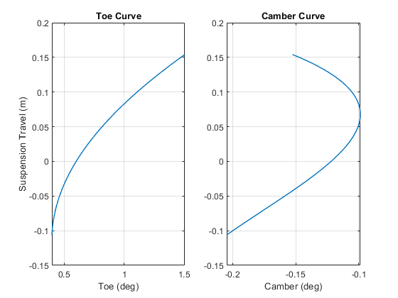
TSuspMetrics =
48×4 table
Names Values Units Description
_____________________________________ ___________ _________ _______________________________________
"Toe" -0.76527 "deg" "+Toe In"
"Camber" -0.036075 "deg" "+Top Out"
"Caster" -2.7424 "deg" "+Top Rear of WC"
"KPI" 6.7537 "deg" "+Top Inside Bottom"
"Camber Change per Toe Change" 0.047898 "deg/deg" "+/-1 deg"
"Bump Steer" 3.389 "deg/m" "+/- 10mm, +Toe In"
"Bump Camber" 0.93289 "deg/m" "+/- 10mm, +Top Out"
"Bump Caster" 57.992 "deg/m" "+/- 10mm, +Caster Decrease"
"Caster Trail" -21.376 "mm" "+Forward of Contact Patch"
"Scrub Radius" 71.758 "mm" "+Inside Wheel Center"
"Hub Long Offset" -2.0718 "mm" "+Forward of WC"
"Hub Lat Offset" 119.48 "mm" "+Inside Wheel Center"
"Suspension Rate" 49.073 "N/mm" "+/-20mm, Wheel Center"
"Ride Rate" 39.765 "N/mm" "+/-20mm, Contact Patch"
"Ride Frequency" 0.29204 "Hz" "Uses Ride Rate"
"Wheel Travel Bump" 0.15404 "mm" "Up"
"Wheel Travel Rebound" -0.10476 "mm" "Down"
"Wheel Travel Total" 0.2588 "mm" "Up+Down"
"WC Recession Long" 0.074623 "mm/m" "+Backwards"
"WC Recession Lat" 0.077007 "mm/m" "+In"
"Spring Ratio" 0.98907 "1" "Spring Disp/WC Disp"
"Damper Ratio" 0.98907 "1" "Damper Disp/WC Disp"
"Roll Steer" 0.32879 "deg" "+/-2deg Roll, +Toe In"
"Roll Camber" -1.9656 "deg" "+/-2deg Roll, +Top Out"
"Roll Stiffness" 199.75 "N*m/deg" "+/-2deg Roll, Wheel Center"
"Roll Stiffness Total" 198.75 "N*m/deg" "+/-2deg Roll, Contact Patch"
"Max Rack Travel" 0 "mm" "Rack Travel at Max Steer"
"Steering Ratio" 1.0182 "1" "Handwheel Angle/Toe Angle, 20 deg Toe"
"Max Toe Out" -38.405 "deg" "+Toe In"
"Max Toe In" 30.826 "deg" "+Toe In"
"Ackermann at 20 deg Inner" Inf "%" "0% if parallel, 100% if ideal"
"Ackermann at Max Inner" Inf "%" "0% if parallel, 100% if ideal"
"TCD Kerb to Kerb" 10.806 "m" "To Outer Front Wheel"
"TCD Wall to Wall" 12.426 "m" "To Outer Front Body Corner"
"Max Rack Force" NaN "kN" "From Applied Forces and Torques"
"Toe/Align Torque (In)" -3.2863e-14 "deg/kN" "In Phase"
"Toe/Align Torque (Out)" -4.3743e-14 "deg/kN" "Out Phase"
"Toe/Lat Force (In)" -3.6545e-15 "deg/kN" "In Phase"
"Toe/Lat Force (Out)" -4.2096e-15 "deg/kN" "Out Phase"
"Camber/Lat Force (In)" -2.8912e-18 "deg/kN" "In Phase"
"Camber/Lat Force (Out)" -2.8912e-18 "deg/kN" "Out Phase"
"Lat Compliance WCtr/Lat Force (In)" 0 "mm/kN" "In Phase"
"Lat Compliance WCtr/Lat Force (Out)" 4.6259e-14 "mm/kN" "Out Phase"
"Lat Compliance CP/Lat Force (In)" 4.6259e-14 "mm/kN" "In Phase"
"Lat Compliance CP/Lat Force (Out)" 9.2519e-14 "mm/kN" "Out Phase"
"Long Compliance Steer Braking" 6.3375e-15 "deg/kN" "0:1kN, +Toe In"
"Long Compliance Steer Tracking" 7.494e-15 "deg/kN" "-1:+1kN, +Toe In"
"WC Long Compliance" 0.0013174 "mm/kN" "0:-1kN"
Trailing Arm (Rear)
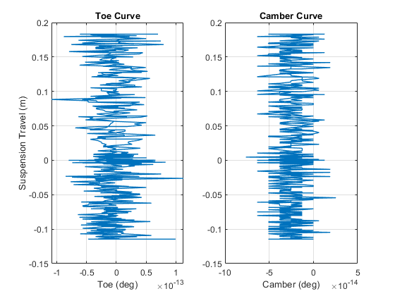
Watts (Rear)
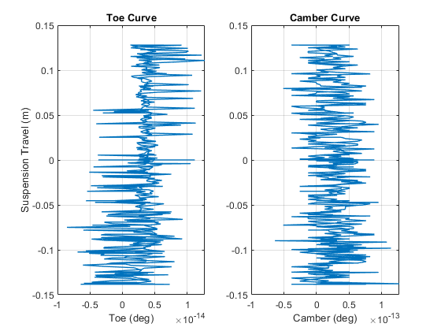
TSuspMetrics =
48×4 table
Names Values Units Description
_____________________________________ ___________ _________ _______________________________________
"Toe" 2.5115e-15 "deg" "+Toe In"
"Camber" 2.5444e-14 "deg" "+Top Out"
"Caster" 0 "deg" "+Top Rear of WC"
"KPI" NaN "deg" "+Top Inside Bottom"
"Camber Change per Toe Change" 0 "deg/deg" "+/-1 deg"
"Bump Steer" 5.6055e-14 "deg/m" "+/- 10mm, +Toe In"
"Bump Camber" -1.1517e-12 "deg/m" "+/- 10mm, +Top Out"
"Bump Caster" -2.734e-11 "deg/m" "+/- 10mm, +Caster Decrease"
"Caster Trail" -4.5272e-05 "mm" "+Forward of Contact Patch"
"Scrub Radius" NaN "mm" "+Inside Wheel Center"
"Hub Long Offset" -4.5272e-05 "mm" "+Forward of WC"
"Hub Lat Offset" -232.39 "mm" "+Inside Wheel Center"
"Suspension Rate" 77.955 "N/mm" "+/-20mm, Wheel Center"
"Ride Rate" 56.825 "N/mm" "+/-20mm, Contact Patch"
"Ride Frequency" 0.34911 "Hz" "Uses Ride Rate"
"Wheel Travel Bump" 0.12793 "mm" "Up"
"Wheel Travel Rebound" -0.13841 "mm" "Down"
"Wheel Travel Total" 0.26634 "mm" "Up+Down"
"WC Recession Long" -0.070962 "mm/m" "+Backwards"
"WC Recession Lat" 2.2204e-14 "mm/m" "+In"
"Spring Ratio" 0.99976 "1" "Spring Disp/WC Disp"
"Damper Ratio" 0.99976 "1" "Damper Disp/WC Disp"
"Roll Steer" -0.14053 "deg" "+/-2deg Roll, +Toe In"
"Roll Camber" -2.0012 "deg" "+/-2deg Roll, +Top Out"
"Roll Stiffness" 304.39 "N*m/deg" "+/-2deg Roll, Wheel Center"
"Roll Stiffness Total" 302.03 "N*m/deg" "+/-2deg Roll, Contact Patch"
"Max Rack Travel" 0 "mm" "Rack Travel at Max Steer"
"Steering Ratio" 0 "1" "Handwheel Angle/Toe Angle, 20 deg Toe"
"Max Toe Out" -5.4017e-15 "deg" "+Toe In"
"Max Toe In" 6.8395e-15 "deg" "+Toe In"
"Ackermann at 20 deg Inner" NaN "%" "0% if parallel, 100% if ideal"
"Ackermann at Max Inner" NaN "%" "0% if parallel, 100% if ideal"
"TCD Kerb to Kerb" 0 "m" "To Outer Front Wheel"
"TCD Wall to Wall" 0 "m" "To Outer Front Body Corner"
"Max Rack Force" NaN "kN" "From Applied Forces and Torques"
"Toe/Align Torque (In)" 3.3459e-15 "deg/kN" "In Phase"
"Toe/Align Torque (Out)" -1.6879e-16 "deg/kN" "Out Phase"
"Toe/Lat Force (In)" 9.3428e-16 "deg/kN" "In Phase"
"Toe/Lat Force (Out)" 4.0281e-16 "deg/kN" "Out Phase"
"Camber/Lat Force (In)" -5.3009e-15 "deg/kN" "In Phase"
"Camber/Lat Force (Out)" 0 "deg/kN" "Out Phase"
"Lat Compliance WCtr/Lat Force (In)" -2.9337e-09 "mm/kN" "In Phase"
"Lat Compliance WCtr/Lat Force (Out)" -2.9338e-09 "mm/kN" "Out Phase"
"Lat Compliance CP/Lat Force (In)" -4.0657e-09 "mm/kN" "In Phase"
"Lat Compliance CP/Lat Force (Out)" -4.0658e-09 "mm/kN" "Out Phase"
"Long Compliance Steer Braking" -2.9954e-16 "deg/kN" "0:1kN, +Toe In"
"Long Compliance Steer Tracking" -6.0935e-16 "deg/kN" "-1:+1kN, +Toe In"
"WC Long Compliance" 1.7294e-17 "mm/kN" "0:-1kN"